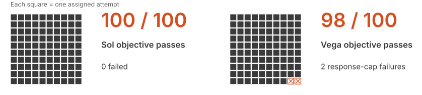
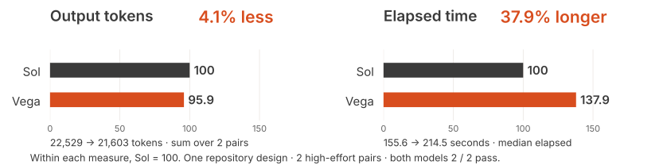
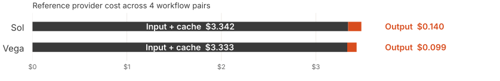

GPT-6 Astra vs GPT-5.6 Sol
The task decides
the upgrade.
Where the early-access model saved tokens.
Where the advantage disappeared.
364 candidate attempts · 18.4M recorded tokens
Direct API · Vega output relative to Sol
One model.
Opposite token results.

Same effort within each row: high vs high.
Separate evidence surfaces
API and Codex need
separate readouts.
Public comparison scope: 322 API workflows · 42 Codex assignments
Within Codex · output tokens including reasoning · Vega vs Sol

Quality before efficiency
Token efficiency matters
after it works.

Those two failures stay in the result.
Recent completed follow-up
The advantage can
get small.

A small token difference. A longer wait.
Task economics
Measure the full
cost of the task.
fewer Vega output tokens
lower reference cost

Input dominated the provider cost estimate.
An inspectable evaluation
The evidence should
travel with the claim.
Task
Save the prompt.
Define acceptance.
Record effort and limits.
Run
Keep provider usage.
Separate API and Codex.
Count failures and retries.
Review
Inspect by task family.
Check human acceptance.
Publish the limitations.
What this changes for delivery
Test the workflow.
Then choose the model.
At Eliza, the decision is the workflow:
accepted result, elapsed time,
and total cost including repair.
Route by task.
Keep the failures in the ledger.